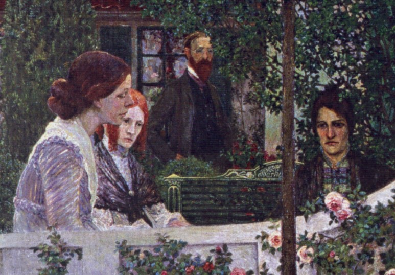

- .신사임당1504~1551 조선중기 서화가
- .모리조1841~1895 프랑스 여류 인상파화가
- .곤차로바1881~1962 러시아출신 프랑스 여류화가
- .나혜석1896~1945 신문화 초창기의 여류화가 서양화
- .이성자1914~ 서양화가
- .박내현1920~1976 동양화가, 판화가
- .천경자1924~ 동양화가
- .이경희1925~ 서양화가
- .이경순1928~ 서양화가
- .심죽자1929~ 서양화가
- .이숙자1942~ 동양화가
- .장영숙1951~ 서양화가
- .오키프
- .프리다칼로
여성이라는 이유로 역사의 뒤안길로 사라진 셰게의 여성화가들을 기록해 본다.
